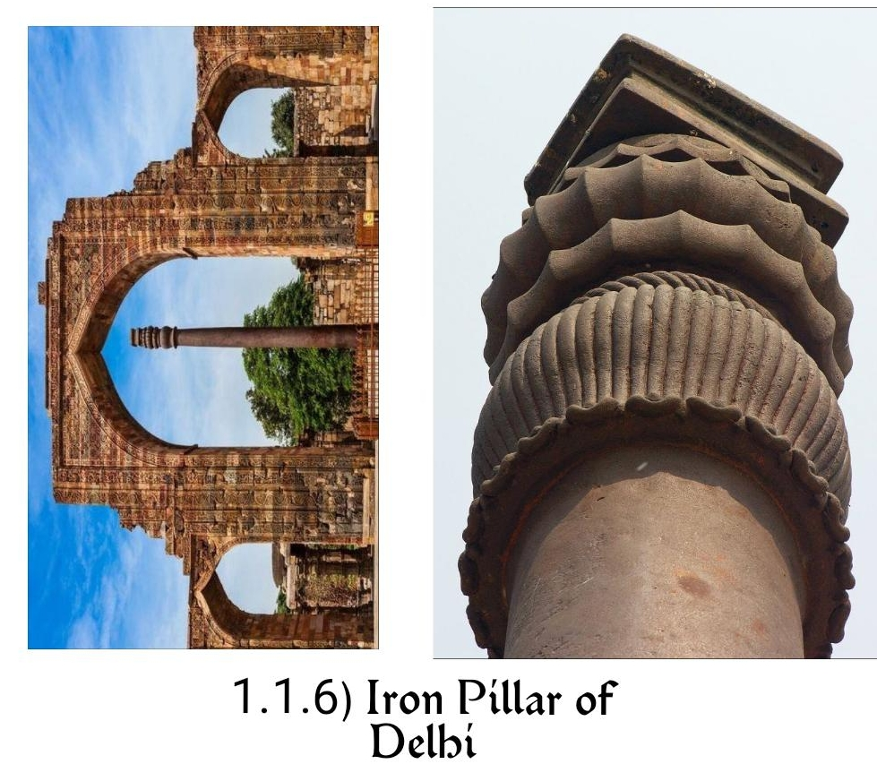

We probably cannot remember every single fact or skill we were taught when we were at school. Our memories fade over time, and if we don’t practice the skills that we’ve been taught regularly, we eventually forget how to use them at all. That doesn’t just apply to individual people, though - that applies to the whole human race! There’s plenty of evidence that our ancestors had various skills and abilities that we lack today, and we will try to cover various technologies, which existed even today! Which is even more relevant than today’s hi-fi technology!
We often believe that modern science to be the zenith for the humanity thus far. Incorrectly perceiving technology as a modern craft, but some societies of the past were actually significantly more creative than we ever give them credit for. Not only the craft technology we are still useing today, but sometimes they were designed things that we still fully don’t understand yet. These are the oldest technologies that scientists Can’t explain !
Wootz steel is one of the finest metals we have ever heard of. Back in the middle ages this material was used to fashion the famous Damascus blade. A legendary weapon allegedly capable of cutting through the rifle barrel or cutting a hair in perfectly two. The material wootz steel has a mystery of its own.
Wootz steel originates in India, sometime around 500 BC, it is generally recognised
for its unique textural patterns, Often in the shapes of waves, ladder or roses. The
world’s foremost metal producers have concocted a a super secret technique to develop
what they were calling "The Finest Steel in the World." Which is pretty confident
considering many of them likely would never have actually explorer the entire world!
Those producers would be pretty happy today, knowing that there secret have remained
intact.
Modern scientists are baffled by this mysterious metal, attempting to reproduce its
unusual texture. None have succeeded of course!
Fire is the one of the most dangerous weapon. Just think about flamethrower, the molotov cocktail or 1999’s smash Smith classic guns, all of them Are pretty modern. But over a 700 years, the Greeks found a new ways to use fire.

It was pretty ingenious. Developed and used by Byzantine Empire, when they find
themselves in battles they throw these unusually shaped granites at their chosen targets.
When they would ignite the flames would sticks to their target and were impossible to
put out without water. In fact the flames were just well burn on top of water then
anything else.
Scientists have found no credible way of explaining that, and the secret was lost to the
history.
Physics tells us water cannot support flames. So how on earth is this possible?
We’ll probably never understand how this incredibly strong weapon worked.
Wikipedia Link: https://en.wikipedia.org/wiki/Greek' _fire
Some books are just impenetrable. Maybe they are overwritten, or there are any
languages that we didn’t understand. Even the Experts!
The voynich manuscript is admittedly a little more complicated than just a language
problem. It is weird, unusual and very mysterious book. Two thirds in the manuscript the
readers discovers a line drawing of a bath surrounded by pipes, And filled with naked
women. The next few pages contains more naked women’s in increasingly unusual
so real scenarios. All of them accompanied by some strange text. The only
problem is this text is complete nonsense. Since its discovery in 1912, the book
has been looked by hundreds of experts. From cryptographers to linguists,
who has tried to decipher whatever it is! But all of them have failed! Experts
remain insistent that this book is not a hoax. But nobody is able to explain its
meaning.
Wikipedia Link: https://en.wikipedia.org/wiki/Voynich' _manuscript
The world of ancient Greeks was nothing short of fascinations. The technological innovations that they were created Were really something else. One of the earliest computers ever to be discovered!
In 1900s, the group of sponge divers in the middle of maritime corridor were forced off by a strong storm. When they happened to stumbled, swim up on unexpected treasure of the coast of the island Antikythera. A sunken ship wreck contained hundreds of priceless greek antiques! The most notable however encrusted bronze hunk of something, eight months after its discovery, the object was found to be some kind of computer. Made up of 30 gear wheels. Scientists have been unable to crack its purpose. Conforming that this was the most advance piece of technology Of the time. Scientists have run multiple investigations and experiments on this odd computer, But had turn up absolutely nothing. It seems whatever its purpose, it’s clearly not cent-ain’t enough to share with us.
Wikipedia Link: https://en.wikipedia.org/wiki/Antikythera' _mechanism
It seems that whatever genius invention western world comes up with, the Chinese
got their first! Of course thousands of years before!
In this case we are looking for a seismograph or earthquake detector.
In 132 A.D. Chinese inventor called Jing Wang created the world’s very first seismoscope. Designed to detect earthquake from some distance, without need of shaking of the device whatsoever. The technology behind this device is so complicated that is it’s almost not even worth trying to summarise in part. Because scientist still unable to explain how exactly mechanism worked. Through the Chinese, an earthquake was a sign from a heaven that must be monitored. So it’s no surprise that they came up with such impressively constructed monitoring tool. It’s not just worth picking a risk of heavens concern!
Science is apparently not bound by the laws. Just unusual guidelines!
Yes! Fire can exist on water, objects can defy gravity and apparently metal doesn’t have
to rust.

The iron pillar of delhi is huge, 7.2 m tall, had stood for over a thousand years! Dating back around 300 A.D. and yet there is not a single bit of rust or deterioration. Nobody knows why it’s there or where it came from. But scientists are more baffled by bizarre lack of any sort of rusting. While there are many theories why is the case, There is no evidence why this is?
The only damage can found on the iron pillar is the result of people touching on the surface! Which forced the addition of fencing around the iron pillar.
These are the unexplained objects of the past.
The codex gigas is the ultimate Swiss knife army to beat all other books. This book is most likely the massive book in the world. Containing 623 foot tall pages and whole host of texts. Not only does this whopping book featured the old and new testament’s, but also book on exorcism, medicine, a full-page drawing of a devil! (Devils Bible), grammar. Researchers have long been searching for answers in the mysterious case of Codex Gigas, but they came up empty. Nobody knows nothing! [For all we know, this book was written by devil. And he was just narcissistic]
https://en.wikipedia.org/wiki/Codex' _Gigas

Deep beneath the ocean, on the southern coast of Japan, a pile of 10,000 years old rooms lie submerged. Their origin is unknown. Their purpose unclear. These greatest unusual rooms discovered in 1995.
https://www.bbc.com/reel/video/p0884j4s/the-truth-behind-japan-s-mysterious-atlantis-